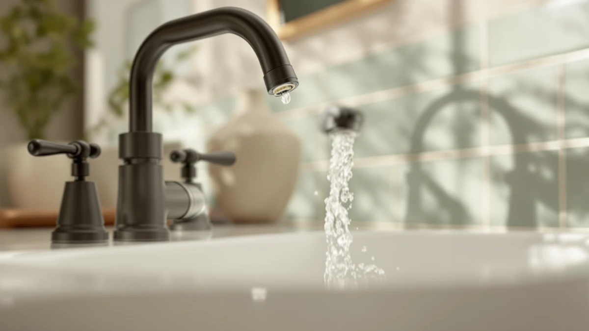

How to Clean Bathroom Faucets with Vinegar: Complete Guide (2026)


Things to Know Before You Buy
- White vinegar's acidity dissolves calcium and lime deposits without the harsh fumes of commercial descalers.
- Undiluted vinegar works faster, but dilute it with water first if your faucet has a matte black, oil-rubbed bronze, or brushed gold finish.
- A 15 to 20 minute soak handles most hard water buildup; longer soaks risk dulling the finish instead of helping.
- The aerator collects more mineral buildup than any other part of the faucet and needs its own separate soak.
- A full rinse and dry after cleaning bathroom faucets with vinegar prevents new water spots from forming as the vinegar dries.
Knowing how to clean bathroom faucets with vinegar means you can dissolve months of hard water buildup with two pantry staples instead of a bottle of commercial descaler. The acid in plain white vinegar breaks down the calcium and lime deposits that dull chrome, nickel, and stainless finishes, and it costs a fraction of what a dedicated bathroom cleaner runs. You do not need to remove the faucet or shut off the water supply to get it done.
The process below takes about 30 minutes and relies on vinegar, baking soda, and tools you likely already own. We researched which finishes tolerate vinegar safely and which ones need a gentler approach, and checked verified owner reviews on replacement faucets in case your current fixture is too far gone to save. Follow the five steps in order, and check the finish warning in step one before you start if your faucet is matte black, bronze, or gold-toned.
What You'll Need
- Supplies: white distilled vinegar, baking soda, and a microfiber cloth for wiping the faucet dry
- Tools: a spray bottle and a soft-bristle toothbrush for scrubbing stubborn bathroom faucet buildup
Step 1: Clear the area and mix your vinegar solution
Start by wiping the faucet down with a dry cloth to remove loose dust and soap residue, so the vinegar can reach the mineral deposits directly instead of sitting on top of grime. Fill a spray bottle with plain white distilled vinegar. You do not need to dilute it for this job; full-strength vinegar works faster on calcified buildup and evaporates without leaving a residue behind.
If your bathroom faucet has an oil-rubbed bronze, matte black, or antique brass finish, lay a hand towel over the counter first and test the vinegar on a small hidden spot, like the underside of the base, before treating the whole fixture. Undiluted vinegar can dull some finishes and strip the coating on lower-quality plated faucets, so a quick spot check saves you from an expensive mistake.
Step 2: Wrap mineral deposits in a vinegar-soaked cloth
Soak a small towel or a few paper towels in the vinegar solution and wrap them tightly around the areas with the heaviest white, chalky crust, usually the base of the spout and the seams around the handles. Rubber bands or a strip of plastic wrap hold the cloth in place so the vinegar stays in contact with the calcium deposits instead of dripping away.
Leave the wrap in place for 15 to 20 minutes. Hard water stains that have built up over months need that soak time to loosen, and wiping too soon simply spreads the deposits instead of dissolving them. Homes with especially hard water may need a second round after you rinse the first layer off.
Step 3: Remove and soak the aerator
Unscrew the aerator, the small mesh screen at the tip of the spout, by hand or with pliers wrapped in a cloth to avoid scratching the finish. Drop it into a small bowl filled with enough vinegar to cover it completely. Mineral deposits collect inside the aerator's screen faster than anywhere else on the faucet because water passes through it constantly, and a clogged aerator is the most common reason a bathroom faucet starts spraying unevenly or losing pressure.
While the aerator soaks, use the same vinegar-soaked cloth from step two to wipe down the handles and any exposed valve stems. After 20 minutes, rinse the aerator under running water and use an old toothbrush to dislodge any remaining flecks of scale from the mesh before you set it aside to reattach later.
Step 4: Scrub stubborn buildup with a baking soda paste
For deposits that survive the soak, mix baking soda with a few drops of vinegar until it forms a thick paste. Apply the paste directly to the remaining spots with your fingers or an old toothbrush, then scrub in small circles. The mild abrasion in baking soda breaks down crusted mineral buildup that vinegar alone loosens but does not always lift completely, especially around textured handles or decorative ridges.
Keep the scrubbing gentle. A soft-bristle toothbrush removes scale without scratching chrome, nickel, or stainless finishes, but stiffer brushes or anything abrasive like steel wool will leave permanent marks. Work section by section and rinse the brush often, since a loaded brush spreads the paste around instead of lifting it clear.
Step 5: Rinse, dry, and reattach the aerator
Rinse the whole faucet with warm water to wash away any leftover vinegar, baking soda, or loosened mineral flakes. Vinegar left to dry on metal can leave faint water spots of its own, so a thorough rinse matters as much as the scrubbing did. Screw the cleaned aerator back onto the spout, hand-tight, and run the water for a few seconds to confirm the spray pattern is even.
Dry the faucet completely with a microfiber cloth, buffing in the direction of the finish's grain for a streak-free shine. A dry faucet also resists new mineral spots longer than a wet one, since standing water is what forms hard water buildup in the first place. Finish with a light coat of car wax or a dedicated metal polish if you want an extra layer of protection between cleanings.
Common Mistakes to Avoid
The biggest mistake homeowners make when they clean bathroom faucets with vinegar is leaving it on too long. Undiluted vinegar sitting on a faucet for hours instead of the recommended 15 to 20 minutes can etch the protective coating on chrome and nickel finishes, leaving a dull patch that no amount of polishing fixes. Set a timer instead of guessing.
Skip vinegar entirely on faucets with a PVD (physical vapor deposition) finish or any warranty language that specifically warns against acidic cleaners. Certain matte black and brushed gold lines use coatings that react poorly to acid and can discolor within a single treatment. Check the manufacturer's care instructions before you start if you are not sure what finish you have.
Do not scrub with steel wool, abrasive sponges, or anything marketed for oven or grill cleaning. These leave micro-scratches that trap dirt and make the next round of buildup worse. A soft cloth or toothbrush is strong enough for mineral deposits.
Finally, do not skip the rinse step. Vinegar residue that dries on the faucet attracts dust and can leave its own faint film, undoing some of the shine you worked to restore. A full rinse and dry finish the job properly and keep the fixture looking clean between treatments.
Our Top Picks
If regular cleaning with vinegar cannot keep up with your home's water hardness, or the finish on your current faucet is pitted beyond repair, these three faucets are worth a look based on verified owner reviews and current pricing.

Editor's Pick
gotonovo Shower Faucet Set with
Owners report this set holds up well to regular vinegar cleaning without the finish dulling, and the included shower components make it a practical upgrade if you are replacing the whole fixture set, not only the sink faucet.
$69.99
Check Price on Amazon
Best Value
NOHALIPY Stainless Steel Brushed Nickel
At under $45, reviewers consistently note this brushed nickel faucet resists water spots between cleanings better than similarly priced options, which cuts down on how often you need to reach for the vinegar.
$43.69
Check Price on Amazon
Premium Choice
Kablle Bathroom Faucet with Pull
The pull-down sprayer adds flexibility for rinsing after a vinegar treatment, and verified buyers cite the solid brass construction as a reason it resists pitting longer than budget alternatives.
$49.99
Check Price on AmazonFrequently Asked Questions
Can I use vinegar on all bathroom faucet finishes?
How long should I leave vinegar on a faucet?
Do I need to dilute the vinegar?
How often should I clean my bathroom faucet with vinegar?
What if vinegar does not remove all the buildup?
Verdict
Cleaning bathroom faucets with vinegar is one of the few maintenance jobs that costs less than ten dollars and takes about thirty minutes, yet it can add years to a fixture that would otherwise look permanently chalky. The method works because vinegar's acidity dissolves the calcium and lime that hard water leaves behind, and baking soda handles anything the soak alone cannot lift. Wrap the heaviest buildup, soak the aerator separately, scrub gently, and finish each session with a full rinse and dry to keep new spots from forming as the vinegar evaporates. Skip this method on matte black, oil-rubbed bronze, or brushed gold finishes unless you have confirmed the coating tolerates acid, since a five-minute mistake there can outlast the mineral stains you were trying to remove. If regular cleaning stops keeping pace with your water hardness, or the finish is already pitted, a faucet like the gotonovo set reviewed above gives you a fresh start with the same easy maintenance routine going forward.